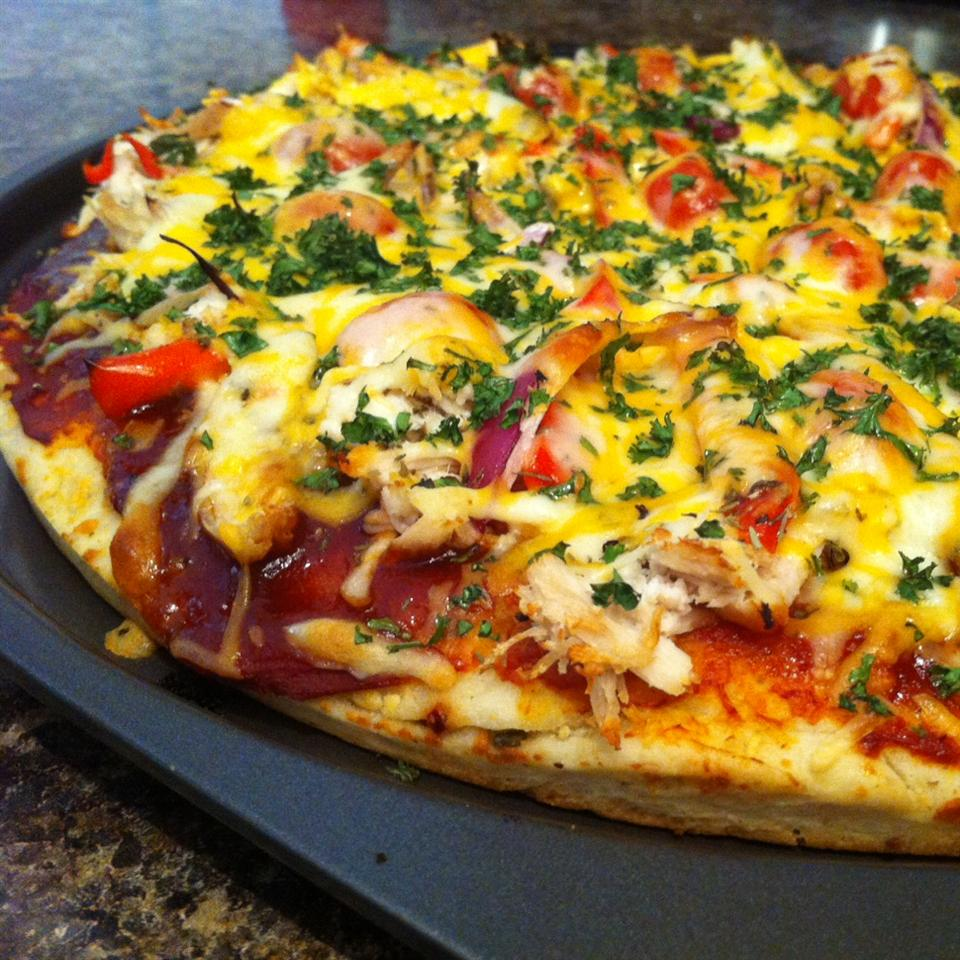

Pizza

Description
A dish of Italian origin consisting of a flattened disk of bread dough topped with some
combination of olive oil, oregano, tomato, olives, mozzarella or other cheese, and
many other ingredients, baked quickly—usually, in a commercial setting, using a wood-fired
oven heated to a very high temperature
Facts
- Cook Time: 10 mins
- Additional Time: 5 mins
- Prep Time: 15 mins
- Total Time: 30 mins
- Servings: 6
- Yield: 6 Servings
Ingredients
- 1 cup chopped cooked chicken
- 1/2 cup barbeque sauce, divided
- 1 (13.8 oz) package refrigerated pizza dough
- 2 tablesppons olive oil, or as needed
- 1 cup shredded Colby-Monterey Jack cheese
- 1 cup diced tomatoes, or to taste
Directions
- Preheat grill to medium heat and lightly oil the grate.
- Mix chicken and 2 tablespoons barbeque sauce together in a bowl until evenly coated.
- Roll dough onto a work surface and cut in half to form 2 rectangles. Brush the top of each rectangle with olive oil.
- Place dough, oil-side down, onto the grill. Cook until bottom of doughs is browned and top is bubbling up, about 5 minutes. Brush the tops of each dough with oil and flip.
- Spread the remaining barbeque sauce over each crust; top with chicken, Colby-Monterey Jack cheese, and tomatoes.
- Close the lid of the grill and cook pizza until the cheese is melted, about 2 to 3 minutes. Remove pizza from grill and cool before slicing, about 2 to 3 minutes.
Nutrition Facts | Per Serving
- 378 Calories
- 17.5 g Protein
- 40.3 g Carbohydrates
- 15.9 g Fat
- 39.3 mg Cholesterol
- 857.8 mg Sodium